Test Case Management
This section outlines how the use-case / test-case management features of SpiraPlan® can be used to develop the business use-cases for the system, which specify how the different pieces of functionality are expected to work in practice. In addition, these use/test-cases form the basis of the business specification of the system when associated with the underlying requirements matrix. Typically when starting a new product:
- The requirements matrix is entered first
- Then the list of use-cases is developed to outline the key scenarios that need to supported to implement the requirement
- Then the use-cases are fleshed out into full test-cases by adding the detailed test-steps with the expected result and suggested sample-data
- Finally the tests are grouped into test-sets so that they can be assigned to users in batches for execution and tracking.
However when migrating existing products into SpiraPlan®, you may need to migrate the test-case list first, and then add the supporting requirements matrix afterwards.
Test Case List
When you click on the Testing > Test Cases link on the global navigation bar, you will initially be taken to the test case list screen illustrated below:

The test case list consists of a hierarchical arrangement of the various test folders and test cases. The structure is very similar to the folder structure in Microsoft Windows® Explorer, and users will find this very familiar and intuitive to use. A folder tree is on the left hand side---with triangle icons to expand / collapse each folder. Contents of the selected folder (the one marked in bold on the folder tree) are shown on the right hand side.
When you create a new product, this list will initially be empty, and you will have to use the "New Test Case" button to start adding test cases to the system. A new product will also not have any test folders---only the base "Root" folder will be visible. To add a test folder, you click the "Add' button at the bottom of the folder tree on the left.
The list shows all test folders (shown with a folder icon), and test cases (shown with a document icon) inside the currently selected folder. You can place test folders and test cases into test folders. All of the items in the list have a name, together with the most recent execution status (passed, failed or not-run), and owner, author, execution date, active flag and test case number. Clicking on a test case's hyperlink will take you to the test case details page for the item in question.
It is important to understand that only test cases are assigned a status themselves; the test folders instead display a test execution bar graph that illustrates the aggregate execution status of its child test-cases. Thus, if the test folder contains two test cases, one of which passed, and one of which wasn't run, the graph will display 50% green and 50% gray.
To determine the exact aggregate test folder execution status information, position the mouse pointer over the bar-chart, and the number of tests in each of the execution statuses (passed, failed, not-run, blocked, caution) will be displayed as a "tooltip". Note that if you change the owner of a test folder, then all the child test cases will be assigned the same owner. This allows you to more easily associate entire folders to test cases to be executed by a specific user.
Add a Test Case
Click the "New Test Case" button will add a test case in the currently displayed folder (ie the one marked in bolder on the folder tree and also shown in the yellow information box). The new test case will be added at the bottom of the list.
Once the new test case has been inserted, the item is switched to "Edit" mode so that you can rename the default name and choose an owner and/or author. Note that all new test cases are initially set with an execution status of "Not Run".
Delete
Clicking on the "Delete" button deletes all the test cases and/or test folders whose check-boxes have been selected. If any of the items are test folders, then the entire contents of that folder will also be deleted (as you would expect in Microsoft Windows® Explorer or OS X Finder).
Execute
Clicking on the "Execute Tests" button (accessed from the "Tools" menu or context menu) executes all the test cases selected, together with all the test cases contained with any selected test folders. The test execution functionality of SpiraPlan® is explained in more detail in Test Step Details.
Refresh
Clicking on the "Refresh" button simply reloads the test case list. This is useful as other people may be modifying the list of test cases at the same time as you, or executing specific test cases, and after stepping away from the computer for a short-time, you can click this button to make sure you are viewing the most current test case list for the product.
Editing a Test Case
Each test case in the list has an "Edit" button in its right-most column. When you click this button (or double-click on any of the cells in the row), you change the item from "View" mode to "Edit" mode. The various columns are made editable, and "Update" buttons are displayed in the last column:

If you click "Edit" on more than one row, the "Update" buttons are only displayed on the first row, and you can make changes to all the editable rows and then update the changes by clicking the one "Update" button. Also, if you want to make the same change to multiple rows (e.g. to change the owner of five test cases from "Fred Bloggs" to "Joe Smith"), you can click on the "fill" icon to the right of the editable item, which will propagate the new value to all editable items in the same column.
If you want to edit lots of items, first select their checkboxes and then click the "Edit" button on the same row as the Filters (ie the topmost edit button) and it will switch all the selected items into edit mode.
When you have made your updates, you can either click "Update" to commit the changes, or "Cancel" to revert back to the original information. Alternatively, pressing the <ENTER> key will commit the changes and pressing the <ESCAPE> key will cancel the changes.
Editing a Test Folder
Test folders shown on the right hand list pane do not have an "Edit" button. To edit a test folder, first click the "Edit" button at the bottom of the left hand folder tree. This will place the whole folder tree into edit mode---each folder will get a small "Edit" button of its own.
Clicking on the "Edit" button of the folder you want to edit will display a pop up dialog. This allows you to: move the folder into a new or different parent folder; edit the name of the folder; or add a more detailed description. Click "Update" to commit the changes, "Cancel" to revert back to the original information, or "Delete" to delete the folder (and all of its contents). Note that on clicking "Delete" a warning box will appear to make sure you don't accidentally delete something.
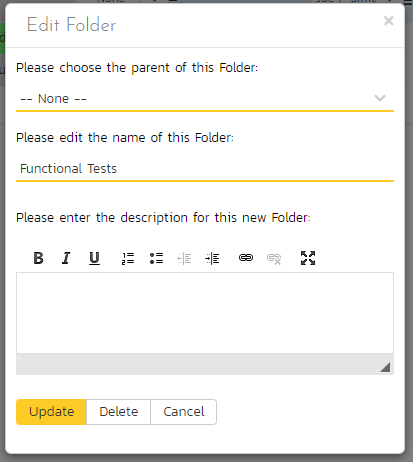
Show / Hide Columns
This drop-down list allows you to change the fields that are displayed in the test case list as columns for the current product. To show a column that is not already displayed, simply select that column from the list of "Show..." column names and to hide an existing column, simply select that column from the list of "Hide..." column names. This is stored on a per-product basis, so you can have different display settings for each product that you are a member of. The fields can be any of the built-in fields or any of the custom properties set up by the product owner.
Note: If you hide the 'execution status' column, the test case folders will no longer show the count of test cases contained within the folder.
Filtering
You can easily filter the list of test cases as illustrated in the screen-shot below:
To filter the list by any of the displayed columns, you either choose an item from the appropriate drop-down list or enter a free-text phrase (depending on the type of field) then click "Filter" or press the <ENTER> key to apply the different filters. Note that the name field is searched using a "LIKE" comparison, so that searching for "database" would include any item with the word database in the name. The other freetext fields need to be exact matches (e.g. dates, test case numbers). In the screen-shot above, we are filtering on Owner = (None).
In addition, if you have a set of filters that you plan on using on a regular basis, you can choose the option Filter > Save Filter to add the current filter to the list of saved filters that appear on your 'My Page'. The list of saved filters can also be retrieved by clicking Filter > Retrieve Filter:
Because the same test case can be run against more than one release, sometimes you want to see the execution information for the displayed test cases for different releases. If you select a release or sprint from the dropdown marked "All Releases" on the right above the table, then the execution information for that specific release will be displayed. If the dropdown is set to "all releases", then it shows only the most recent execution information. In both cases, all test cases (as per any filter) are listed.
Copying Test Cases
To copy one or more test cases, simply select the check-boxes of the test cases you want to copy and then select the Edit > Copy Items menu option. This will copy the current test case selection to the clipboard. Then select the place where you want the test cases to be inserted and choose the Edit > Paste Items option.
The test cases will now be copied to the destination you specified. The name of the copied test cases will be prefixed with "Copy of..." to distinguish them from the originals.
Moving Test Cases or Folders
There are two options for moving test cases or folders:
- Click on the test case/folder you want to move in the right hand list and drag it to the folder in the left hand folder tree you want it moved to. The background of the new folder will change to show where it will be inserted:
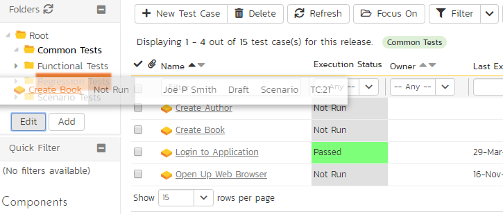
Once you have the test case/folder positioned at the correct place that you want it inserted, just release the mouse button. To move multiple items simply select their checkboxes and then drag-and-drop one of the selected items.
- Alternatively you can simply select the check-boxes of the test cases you want to move and then select the Edit > Cut Items menu option. This will cut the current test selection to the clipboard. Then select the place where you want the test cases to be inserted and choose the Edit > Paste Items option. The test cases will now be moved into the destination specified.
Exporting Test Cases
To export a test case or set of test cases from the current product to another product in the system, select the check-boxes of the test case(s) you want to export and then click Tools > "Export to Product". This will bring up a list of possible destination products:
Once you have chosen the destination product and clicked the "Export" button, the test cases will be exported from the current product to the destination product. Any file attachments will also be copied to the destination product along with the test cases.
Adding Test Cases to a Release, Test Set or Requirement
To quickly add a series of test cases to a Release, Test Set or Requirement, select the check-boxes of the appropriate test cases and then click Tools > Add to Release / Test Set / Requirement. This will bring up a dialog box displaying either a list of available releases, test sets or requirements (depending on which option was chosen):

Once you have chosen the destination release / test set / requirement, clicking "Add" will add the selected test cases to the destination release / test set / requirement.
Viewing the Test Status for a Release
By default, when you view the list of test case cases, it will display an aggregate status for all releases of the product. I.e. the test list will include all the test cases in the system (regardless of which release they apply to) and the execution status will reflect the most recent test run -- regardless of which release it was for.
To change the test case list to just display test cases and execution status for a particular release, change the release selected in the drop-down list located in the yellow information panel (on the right-hand side) from "All Releases" to a specific release:

As illustrated in the example above, when the drop-down list is changed to select a specific release, the list of test cases is filtered to just those mapped to the release in question. In addition, the execution status for the test releases will only reflect test runs for that specific release (and any child sprints if applicable). As can be seen in our example, many test cases that have been run for other releases now show the "Not Run" status since they've not been run for this specific release.
As a shortcut, when you select a specific release for viewing, subsequent execution of any of the test cases via the Tools > Execute Tests menu option will default the test run to the selected release.
Printing Items
To quickly print a single test case, test folder or list of test cases you can select the items' checkboxes and then click Tools > Print Items. This will create a printable report of the selected items in a new window.
Right-Click Context Menu
SpiraPlan® provides a shortcut -- called the context menu - for accessing some of the most commonly used functions, so that you don't need to move your mouse up to the toolbar each time. To access the context menu, right-click on any of the rows in the test case list and the following menu will be displayed:

You can now choose any of these options as an alternative to using the icons in the toolbar.
Test Case Details
When you click on a test case item in the test case list, you are taken to the test case details page illustrated below:

This page is made up of three areas;
-
the left pane displays the test case folders and list navigation;
-
the right pane's header, which displays: the operations toolbar; the editable name of the selected test case; and the info bar (with a shaded background), which also contains the workflow status transitions (see below); and
-
the right pane's tabbed interface with rich information related to the test case.
The navigation pane consists of a link that will take you back to the test case list, as well as a list of the peer test cases to the one selected. This latter list is useful as a navigation shortcut: you can quickly view the detailed information of all the peer test cases by clicking on the navigation links without having to first return to the test cases list page. The navigation list can be switched between three different modes:
-
The list of test cases matching the current filter
-
The list of all test cases, irrespective of the current filter
-
The list of test cases assigned to the current user
If you are editing an existing item, the fields that are available and the fields that are required will depend on your stage in its workflow. The types of change allowed and the email notifications that are sent will depend on how your product administrator has setup the system for you. Administrators should refer to the SpiraPlan Administration Guide for details on configuring workflows to meet their needs.
Depending on the user's role and whether they are listed as the owner or author of the test case, displayed in the info bar beneath the test case name is the current workflow status and an "operations" button which, when clicked, will show a set of allowed workflow operations.
These workflow transitions allow the user to move the item from one status to another. For example when the test case is in the Ready for Review status, you will be given the options to:
Approve Test Case -- changes status to "Approved"
Reject Test Case -- changes the status to "Rejected"
Return to Draft - changes the status to "Draft"
Please note that if digital signatures have been enabled for a particular workflow operation (and therefore a digital signature is required to confirm the status change. Workflow operations requiring a digital signature are marked with a padlock icon as in the example below:
On attempting to save changes made after clicking a workflow operation that requires a digital signature you will be presented with a popup similar to the one below (which is for a requirement):

The top part of the right pane allows you to view and/or edit the name of the particular test case. Once you are satisfied with any changes made here or to the information below, click "Save". Alternatively, if you click the dropdown you can either click "Save and Close" (which will take you back to the list page after saving); or "Save and New" to commit the changes and immediately create another test case. In addition you can: create a replica of the current test case by clicking "Clone"; delete the current artifact by choosing "Delete"; discard any changes made by clicking "Refresh"; or print or export it using from the "Tools" dropdown.
Clicking the "Execute" button will immediately prepare the current test case for execution and then take you to the test execution screen
Using the "Email" button on the toolbar, you can send an email containing details of the test case by either specifying an email address or another user on the system:
You can specify the subject line for the email, and either a list of email addresses, separated by semicolons, or an existing product user. The content of the email is specified in the System Administration -- Notification Templates.
To be notified of any changes made to the current artifact via email, click the "Subscribe" button. If you already subscribed, the button will instead let you "Unsubscribe" to stop receiving emails about that particular artifact. Depending on your role, you may also see a dropdown arrow to the right of this button. This will let you subscribe others in the product to this artifact
The lower part of the right pane can be switched between eight different views by clicking the appropriate tab. Initially the pane will be in "Overview" mode, but it can be switched to "Requirements Coverage", "Test Runs", "Releases", "Incidents", "Attachments", "History", and "Test Sets" modes if so desired. Each of these views is described below.
Overview - Details
The Overview tab is divided into a number of different sections. Each of these can be collapsed or expanded by clicking on the title of that section. This tab displays the fields, detailed information, and comments associated with the test case.
The top part of this tab displays the various standard fields and custom properties associated with the test case. Fields (both standard and custom) are grouped under the collapsible headings (marked by orange text and underline) in the screenshot below. For instance, all fields regarding dates are grouped together in the "Dates and Times" area.
The Detailed Information section contains the long, formatted description of the test case, as well as any rich text custom fields. You can enter rich text or paste in from a word processing program or web page. Clicking on the shaded areas of one of these detailed fields will display the rich text toolbar.
The Suspect flag is automatically set on an approved test case, when one of the requirements linking to it changes. This lets you quickly find all the test cases impacted by a specific requirement change. For this to happen the requirement needs to be in an Accepted or later status (i.e. not Rejected, Rejected, Under Review, Obsolete) and the test case needs to be an approved status (i.e. not Draft, Obsolete, Rejected).
Followers
Using the "Subscribe" button on the toolbar, you can quickly follow the item, and receive updates on certain changes to it. Depending on your role, you may also see a dropdown to this button, which let's you add another product member as a follower to this item.


You can also quickly see who is following an incident under the "People" section in the Overview tab.

To view information about the follower, or to unfollow them from the item, hover over their avatar to display a user profile card.

Overview - Test Steps
This view displays the name of the test case together with all the defined test steps that a tester would need to perform to verify that the functionality works as expected. The list of test steps displays the position number, the description, the expected result, some suggested sample data and the most recent execution status of the individual test step:
Note: Test steps that are marked with a hyperlink and test case icon (e.g. "Call Login to Application" in the screen shot above) are in fact linked test cases. Linked test cases are a useful way of reusing existing test steps from other test cases. For example if you want to have a set of steps be in more than one test case (e.g. a login step) then you would create a separate test case just containing these steps, then have all the other test cases just link to it. This avoids the need to have duplicate test steps throughout the product.
If you click on the step number hyperlink (e.g. Step 2) you will be taken to the test step details page which allows you to perform additional editing of a specific test step as well as attach documents, associate pre-existing incidents and view the change history.
Insert Step
Clicking on the "Insert Step" button inserts a new test step before the currently selected (by means of the check-box) test step. Clicking the "Insert Step" button without selecting a test step will insert a new step at the end of the list. When a new step is inserted, the fields are displayed in "Edit" mode, so the description, expected result and sample data fields are editable, allowing you to enter the data:
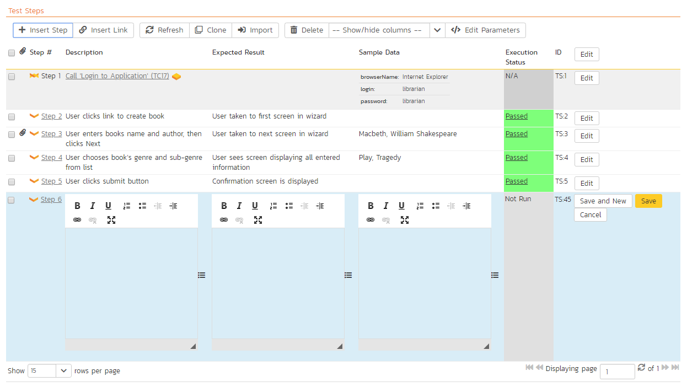
Once you have entered the necessary information, you can click either "Save and New" to commit the changes. If you choose "Save and New" another new row will be inserted which is useful if you intend on entering lots of rows at once, whereas clicking "Save" will commit only the current row.
Insert Link
Clicking on the "Insert Link" button brings up the following dialog box that allows you to either choose an existing test case to be inserted or create a new test case and step with parameters:
When linking an existing test case, first select its parent folder from the dropdown. Then select the name of the test case you want to insert as a link from the list. If the test case has declared parameters (see the section on Parameters below for more details) you will be given a list of parameters that needed to be filled out.
You need to fill out the values of the parameters for the linked test case and then click the "Add" button to complete the operation. The system will then insert the test case as a link just before the currently selected test step. If no existing test step was selected, the link will be added at the end of the test step list.
If you want to create a test step with specific parameters and parameter values, you can do so by clicking the "Create New Test Case". This will change the dialog to one where you can assign a folder, name, and parameters to a new test case. On clicking the "Add" button: the new test case is created; a test step is created within that new test case; the parameters specified in the dialog are assigned to that test step, with the values set as the defaults for the step; and the new test case is added as a linked test case in the list of test steps.

Delete
Clicking on the "Delete" button deletes the currently selected test steps, and reorders the test step position numbers to close any gaps in numbering.
Clone
Clicking on the "Clone" button makes a duplicate of the current test step or linked test case and inserts the copied version directly above the original one.
Refresh
Clicking on the "Refresh" button simply reloads the list of test steps. This is useful if other people are making changes to the test list and you want to make sure that you have the most current version.
Show / Hide Columns
By default the test step list screen will display the Description, Expected Result and Sample Data fields. However the Expected Result and Sample Data fields are optional and can be hidden if necessary to make more space. If you have configured custom properties for test steps, you can use the Show/Hide features to display one or more of your custom properties instead. These fields will then be editable in this grid-view.
Editing Test Steps
To modify an existing Test Step you simply need to click on the "Edit" button to the right of the step, or just double-click on the cells in the row. That will switch the selected row into Edit mode. The various columns are turned into editable text-boxes, and "Save" and "Cancel" buttons are displayed in the last column:

If you click "Edit" on more than one row, the "Save" buttons are only displayed on the first row, and you can make changes to all the editable rows and then save the changes by clicking the one "Save" button. Also, if you want to make the same change to multiple rows, you can click on the "fill" icon to the right of the editable item, which will propagate the new value to all editable items in the same column. When you have made your changes, you can either click "Save" to commit the changes, or "Cancel" to revert back to the original information.
Editing Test Links
To modify an existing Test Link you simply need to click on the "Edit" button to the right of the step, or double click on the cells in the row. That will open up the special dialog box used for editing the parameter values associated with a specific linked test case:

This allows you to edit the parameters being passed from the current test step to the linked test case without having to recreate the test link from scratch. To commit the change click "Save" to close the dialog box, or click "Cancel" to revert back to the original information.
Moving Test Steps
To move test steps in the list, click on the row you want to move and drag it where you want it moved to within the list of test steps. An empty space will appear to show you where it will be inserted.
Parameters
Test cases can have parameters associated with them. This enables one test case to be called several times by another test case (as a link) and have different parameters passed in each case, making the operation different. E.g. you could have a generic "login to application" test case that others call as an initial step, which could be provided with different login information depending on the calling test case.
To view / change the parameters associated with the current test case, click on the "Edit Parameters" button in the toolbar and the list of current parameters will be displayed:
The list of existing parameters is displayed in a list. Beneath this, is a form where you can add a new parameter and default value (used when the test case is run directly rather than being called by another test case). You can delete an existing parameter or copy the parameter token to your computer's clipboard. If you want to paste the parameter token onto the current page (say into a specific test step), position the cursor where you want and click "Insert at Cursor" This is a quick way to include the parameter and then have it converted into the parameter value during test execution.
Overview - Automation
The Automation section displays any automated test scripts associated with the current test case. There are three types of automated test:
-
Attached -- this is when SpiraPlan physically stores the test script as an attachment in the system. This is only available for test automation tools that store their test scripts as plain text files. Examples of such tools are Selenium-RC and Squish.
-
Linked -- this is when SpiraPlan stores the location of the test script stored on the automation host itself or on an external network drive.
-
Repository -- This is a special option only available when using Rapise™, the test automation system from Inflectra. This allows you to store an entire folder of automated test script files in SpiraPlan and have them linked to the test case.
The screenshot below illustrates a sample Rapise automated test script attached to a test case:

The automation screen includes the following fields that you should populate when using SpiraPlan® to store an automated test script:
Automation Engine -- this should be the name of the test automation engine that the test script should be executed with. This list is populated by a system administrator using the administration section of the application (as described in the SpiraPlan Administration Guide)
Script Type -- This should be set to either "attached" or "linked". If you choose to attach the test script, the large text box at the bottom will be enabled, allowing you enter/edit the test script directly in SpiraPlan. If you choose linked, the test script is stored externally and SpiraPlan just stores a reference to it. The "repository" option is never selectable within SpiraPlan and will be automatically set by Rapise when it attaches a test script to the test case.
Filename -- If you are attaching the test script to the test case then this field just needs to contain the filename of the test script (no folders or path needed), whereas if you are choosing to link the test script, you need to follow the exact format that will be expected by the test automation engine. For details, please refer to the specific test automation engine in the SpiraTest/Team Automated Test Integration Guide.
Document Type - This should be set to the document type that you want the test script associated with.
Document Folder - This should be set to the document folder that you want the test script to be stored in. Note that if the script type is repository then the folder is set automatically and cannot be edited by the user.
Version -- This should contain the version number of the test script.
Test Script -- If you are attaching a test script, this should contain the actual program code for executing the test script. The language and syntax will be dependent on the test automation engine being used. If you are linking the test script, this section will be disabled.
Parameters -- You can enter the various test case parameters by clicking on this hyperlink. Most of the automation tools that SpiraPlan integrates with will support the passing of parameter values from SpiraPlan to the automation tool.
Overview - Comments
The Comments section allows users to add and view discussions related to the Test Case:

Existing comments are displayed by date (either newest-first or oldest-first) above the text box. To add a comment to the Test Case, enter your text into the textbox, then click the "Add Comment" button.
Requirements Coverage
This tab displays the requirements coverage information for the test case in question:

The table shows the requirements, if any, mapped to this test case. Clicking on the hyperlinked names will jump you to the details screen for the item in question.
To map the test case to a new requirement, click the "Add" button to display the add association panel. You can search by the ID (if known) prefixed with the appropriate token (e.g. "RQ:4" to search for requirement 4). You can also browse by package, or search by name. Select the requirements you want and then click the "Save" button".

From the same add association panel there is a short to "Create Requirement from This Test Case". This button will create a new requirement in the list of covered requirements that will be automatically linked to this test case. This is useful when you have created a new test case and want to generate an initial placeholder requirement to be fleshed-out later.
Finally, to remove coverage for this test case, select any of the added requirements (those in the bottom table) and click the "Remove" button.
Test Runs
This view displays the name of the test case together with a list of the previous execution runs that the test case has been put through. Each test run is listed together with the date of execution, the name of the test case, the name of the test set (if applicable), the name of the tester, the release/version of the system that the test was executed against, the overall execution status for the test case in that run and a link to the actual test run details. In addition, you can choose to display any of the custom properties associated with the test run.
The "show/hide columns" drop-down list allows you to change the fields that are displayed in the test run list as columns. To show a column that is not already displayed, simply select that column from the list of "Show..." column names and to hide an existing column, simply select that column from the list of "Hide..." column names. The displayed columns can be any standard field or custom property.
You can also filter the results by choosing items from the filter options displayed in the sub-header row of each field and clicking the "Filter" button. In addition, you can quickly sort the list by clicking on one of the directional arrow icons displayed in the header row of the appropriate field.
Releases
This tab displays the name of the test case together with the release mapping information for the test case in question. It functions in a similar way to the Test Coverage tab described above: the table at the bottom of the panel shows the releases, if any, mapped to this test case. Clicking on the hyperlinked names will jump you to the details screen for the item in question. You can search for and add releases to this list using the "Add" button, or remove them using the "Remove" button.

Incidents
This tab displays the list of incidents associated with the current test case. The incidents have either been created during an execution of the test case (and are thereby linked to one of the test runs) or manually linked to one of the test steps in the test case.
Each incident is listed together with the type, status, priority, name, owner, detector, detection date and a link to the actual incident details. You can customize the fields that are displayed using the "Show/Hide Columns" option. In addition, you can perform the following operations:
Refresh -- updates the list of incidents from the server, useful if other people are adding incidents to this release at the same time.
You can also filter the results by choosing items from the filter options displayed in the sub-header row of each field and clicking the "Filter" button. In addition, you can quickly sort the list by clicking on one of the directional arrow icons displayed in the header row of the appropriate field.
Edit -- Clicking the "Edit" button to the right of the incident allows you to edit the incident inline.
Attachments
In this tab, the main pane displays the list of documents that have been "attached" to the test case. The documents can be in any format, though SpiraPlan® will only display an icon for certain known types.

The attachment list includes the filename that was originally uploaded together with the file-size (in KB), name of the person who attached it and the date uploaded. In addition, if you position the pointer over the filename and hold it there for a few seconds, a detailed description is displayed as a tooltip.
To actually view the document, simply click on the filename hyperlink and a new web browser window will open. Depending on the type of file, this window will either display the document or prompt you for a place to save it on your local computer. To delete an existing attachment from a test case, simply click the "Remove" button and the attachment will be removed from the list.
To attach a new document to the test case, you need to first click the "Add New" link to display the new attachment dialog box:
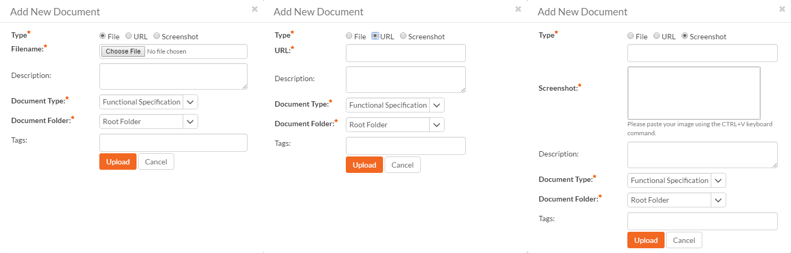
There are three different types of item that can be attached to a test case:
To upload a file, choose "File" as the type and then click the Browse button and select the file from your local computer, optionally enter a detailed description then click the "Upload" button. The document will be copied from your computer and attached to the artifact.
To attach a web-link (URL) to the artifact, you need to choose "URL" as the type and then enter the fully qualified URL (e.g. http://mywebsite.com?Document=1), an optional description and then click the "Upload" button to attach the web-link.
To attach a screenshot to the artifact, you need to choose "Screenshot" as the type and then copy the image to your computer's clipboard (e.g. on Windows computers, the PRINT SCREEN button captures the current page and adds to the clipboard). Once the image is in the clipboard, paste it into the editor using CTRL+V (or the equivalent keystroke for your operating system) and the item will appear in the preview window. You can then fill in the other fields and click "Upload" to attach the image.
Note: If you are using a non-Windows® computer (e.g. Macintosh®) that doesn't put file extensions on filenames (e.g. .xls for an Excel sheet) automatically, then you will need to manually add the file extension to the filename before uploading if you want it to be displayed with the correct icon in the attachment list.
You can also associate an existing document (that's already stored in SpiraTeam) with the test case. To do that, click on the "Add Existing" button to bring up the add file association dialog box:
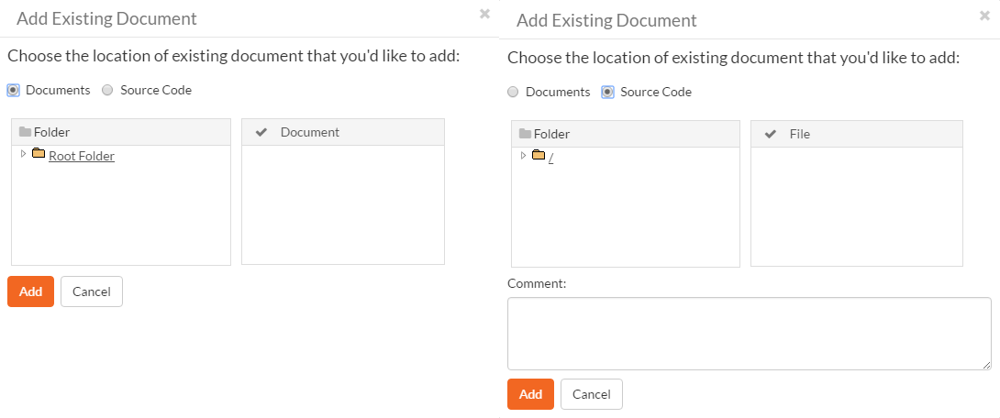
You can then choose to either associate a document stored in the SpiraPlan Documents repository or (in the case of SpiraPlan/SpiraTeam but not SpiraTest) from the linked source code repository. In either case you first select the appropriate folder, and then pick the document(s) from the file list on the right. In the case of a source code file association you can also add a comment.
History
In this tab, the main pane displays the list of changes that have been performed on the test case artifact since its creation. An example test case change history is depicted below:

The change history displays the date that each change was made, together with the fields that were changed, the old and new values and the person who made the change. This allows a complete audit trail to be maintained of all changes in the system. In addition, if you are logged in as a product administrator you can also click on the "Admin View" button to navigate to where you can revert any unwanted changes.
Test Sets
In this tab, the main pane displays the test sets that contain the current test case. Each test set is listed together with its name, release, the date of last execution, the owner, the status, the execution status, and a link to the actual test set details. In addition, you can choose to display any of the custom properties associated with the test set.

The "show/hide columns" drop-down list allows you to change the fields that are displayed in the test set list as columns. To show a column that is not already displayed, simply select that column from the list of "Show..." column names and to hide an existing column, simply select that column from the list of "Hide..." column names. The displayed columns can be any standard field or custom property.
You can also filter the results by choosing items from the filter options displayed in the sub-header row of each field and clicking the "Filter" button. In addition, you can quickly sort the list by clicking on one of the directional arrow icons displayed in the header row of the appropriate field.
Tasks
This tab is only available to SpiraPlan users. It displayes a table view of any tasks that have been associated to the test case. The only way to link a task to a test case is via test execution of a test case with a type set to "Exploratory".
Test Step Details
When you click on one of the hyperlinks next to a test step in the test step list (see above), you will be taken to the test step details screen illustrated below:

This page is made up of three areas; the left pane is the navigation window, the upper part of the right pane contains the test step detailed information itself, and the bottom part of the right pane contains related information about the test step.
The navigation pane consists of a link that will take you back to the test step list, as well as a list of the peer test steps to the one selected. This latter list is useful as a navigation shortcut; you can quickly view the detailed information of all the peer test steps by clicking on the navigation links without having to first return to the test step list page. You can also switch between seeing the list of test steps with the current filter applier or simply unfiltered.
The top part of the right pane allows you to view and/or edit the details of the particular test step. You can edit the various fields (description, expected result and sample data) and custom properties. Once you are satisfied with them, click any "Save" button on the page to commit the changes. If you want to add a new test step to the test case, you should click "Save and New" from the dropdown menu of the "Save" button at the top of the page instead.
The lower part of the right pane can be switched between four different views by clicking the appropriate tab. Initially the pane will be on "Incidents" tab, but it can be switched to "Attachments", "History" or "Requirements" tabs if so desired. Each of the views is described separately below.
Incidents
In this mode, the main pane displays a list of any incidents that are associated with this test step. They can either be linked indirectly due to being logged during a test run, or directly linked after the fact:

Each incident is listed together with the type, status, priority, name, owner, detector, detection date and a link to the actual incident details. You can customize the fields that are displayed using the "Show/Hide Columns" option. In addition, you can perform the following operations:
Refresh -- updates the list of incidents from the server, useful if other people are adding incidents to this release at the same time.
You can also filter the results by choosing items from the filter options displayed in the sub-header row of each field and clicking the "Filter" button. In addition, you can quickly sort the list by clicking on one of the directional arrow icons displayed in the header row of the appropriate field.
Edit -- Clicking the "Edit" button to the right of the incident allows you to edit the incident inline directly on this screen.
To create a new association between this test step and an existing incident, click the "Link Incident" button which will display the following panel:

You need to choose the specific incident(s) you want to link to, either by choosing the item from the scrolling selection box, or searching for them by name or ID. Before adding the chosen incidents you can add a comment that explains the rationale for the association.
Attachments
This tab displays the list of documents that have been "attached" to the test step. The documents can be in any format, though SpiraPlan® will only display an icon for certain known types.
To actually view the document, simply click on the filename hyperlink and a new web browser window will open. Depending on the type of file, this window will either display the document or prompt you for a place to save it on your local computer. To delete an existing attachment from a test case, simply click the "Delete" button and the attachment will be removed from the list.
To attach a new document to the test step, you need to first click the "Add New" link to display the new attachment dialog box:
There are three different types of item that can be attached to a requirement:
To upload a file, choose "File" as the type and then click the Browse button and select the file from your local computer, optionally enter a detailed description then click the "Upload" button. The document will be copied from your computer and attached to the artifact.
To attach a web-link (URL) to the artifact, you need to choose "URL" as the type and then enter the fully qualified URL (e.g. http://mywebsite.com?Document=1), an optional description and then click the "Upload" button to attach the web-link.
To attach a screenshot to the artifact, you need to choose "Screenshot" as the type and then copy the image to your computer's clipboard (e.g. on Windows computers, the PRINT SCREEN button captures the current page and adds to the clipboard). Once the image is in the clipboard, paste it into the editor using CTRL+V (or the equivalent keystroke for your operating system) and the item will appear in the preview window. You can then fill in the other fields and click "Upload" to attach the image.
Note: If you are using a non-Windows® computer (e.g. Macintosh®) that doesn't put file extensions on filenames (e.g. .xls for an Excel sheet) automatically, then you will need to manually add the file extension to the filename before uploading if you want it to be displayed with the correct icon in the attachment list.
You can also associate an existing document (that's already stored in SpiraTeam) with the requirement. To do that, click on the "Add Existing" button to bring up the add file association dialog box:
You can then choose to either associate a document stored in the SpiraPlan Documents repository or (in the case of SpiraPlan/SpiraTeam but not SpiraTest) from the linked source code repository. In either case you first select the appropriate folder, and then pick the document(s) from the file list on the right. In the case of a source code file association you can also add a comment.
History
This tab displays the list of changes that have been performed on the test step artifact since its creation. An example test step change history is depicted below:
Requirements
Normally within SpiraTest, you will link the test cases in a product with your requirements to describe which requirements are covered by each of the test cases. When all of the tests for a requirement pass, the requirement is considered fully tested.
However, in some industries (for example when developing Defense systems) there is an additional requirement to report on the traceability between the individual test steps and the requirements. For customers that have such a requirement, this tab lets you associate the current test step with specific requirements.
The tab displays a grid containing the requirements already mapped to this test step. You can filter that list by the requirement type, name, status, importance, product name and ID. You can remove an existing requirement by selecting its check box and clicking the 'Delete' button. This doesn't delete the requirement, just removes it from the test step.
Hovering the mouse over the names of the requirements will display a "tooltip" consisting of the requirement name, place in the hierarchy and a detailed description.
To add a new test case to the requirement, click the 'Add' button:

You can search for a requirement by its ID if you know it (make sure to include the "RQ" prefix):

Otherwise, you can search for the requirements by choosing a parent package from the dropdown and/or entering a partial name match:

One you have found the desired requirement(s), simply select their check boxes and click the 'Save' button to add them to the current test step:

Execute Test Case(s)
This section describes how a tester can follow the steps defined for a series of test cases and record what actually happened in the process. In addition, recorded failures of test cases can be used to automatically generate new incidents that will be added to the incident tracking module.
You start test case execution in SpiraPlan by either:
-
selecting test cases or test sets on their respective page(s) and clicking the "Execute" button;
-
clicking the "Execute" button on the test cases / test sets listed on your personalized home page under "My Test Cases" or "My Test Sets".
If you execute a test set then the values of the selected release and custom list properties for the test run are automatically populated from the test set, whereas if you directly execute a test case itself, those values can be chosen by the tester.
Regardless of the route taken to launch the test execution module, the first screen that will be displayed will look like the following:

Before actually executing the test scripts, you need to select the release (if not already set) and optionally the specific build of the system that you will be testing against. You can also specify any test run custom properties that have been defined by the product owner. This ensures that the resulting test runs and incidents are associated with the correct release of the system, and that the test runs are mapped to the appropriate custom properties (e.g. operating system, platform, browser, etc.).
If you have not configured any releases for the product, then the release drop-down list will be disabled and the test runs/incidents will not be associated with any particular release. If the test run was launched from a test set, the release and any list custom properties will be pre-populated from the test set itself and will not be changeable on this screen (unless they weren't set by the test set).
Once you have chosen the appropriate release name and/or custom properties, click the "Next" button to begin executing test steps. By default you will see the default test execution module, shown below.
There is a second test execution view: the exploratory test execution module. This has much in common with standard test execution but differs in a number of important ways. You will automatically see this module if the following three conditions are met;
-
you are executing a single test case (not a test set or a test case as part of a test set);
-
that test case is of type "exploratory"; and
-
you have the necessary permissions (you can create test cases)
The screen is divided up into three main areas (each is explained in more detail in the sections below):
The header area at the top of the page, which displays the name (if any) of the test run, along with the selected release. This section also contains buttons to control how the "test execution area" looks and functions for the tester.
The Progress Bar, which shows a summary graphical view of the whole test run. The progress bar also has a number of navigation buttons to help you move around the test run, or to leave the test execution page. Between the buttons are indicator blocks. For test runs with relatively few test steps, each indicator block represents a single test step. A tall dotted line is used to indicate the end of one test case and the start of another. When there are many test steps to a test run, each indicator block represents a test case. Hovering over an indicator block will display a tooltip with information about the test step or case represented. The color of the indicator block matches the color of any assigned execution status for the test step or test case (see below).
The rest of the page contains the "test execution area". This has details about all of the steps in the test run. It can be used to both navigate between test cases and test steps, as well as to actions on any test case or test step (for instance assigning an execution status or logging an incident). This area can look markedly different depending on which display mode a user has selected. However, in every mode, a tester will be able to readily view the name and description of the test step (and at times the parent test case), along with the description of the test step, instructions for carrying out it, and any expected results. The test can then compare the results with those listed as expected. As described below, depending on how the actual system responds, you will use the buttons and fields on the page to record what actually happened.
Note: on first accessing this screen, the user will be given a guided tour of many of the features of this page. This can be accessed at any time via the options menu (discussed below)
Display Modes
The display mode toolbar is at the top right of the test execution screen. There are three different display modes. Each display mode has two sub-modes, using simple graphical images to indicate what they do (each pair of buttons to change sub-mode becomes visible on activating a particular display mode).
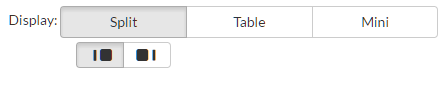
All of these modes affect how the test cases and test steps are displayed in the "test execution area". The different views have been designed to suit different ways of testing, depending on how your organization works; or the needs of a tester for a particular test.
There are three parts in the "test execution area", which are visible or hidden depending on the view.
Table: this shows a list of every test case and step in the test run. The level of information it displays depends on the display mode.
Inspector: this is a detailed form containing full information about a single test step (and its associated test case as needed). It also always shows the full set of actions that can be taken on that step
Iframe: if you are testing an internal website (or external site that allows access via iframes) you can access it directly from this iframe browser. This allows you to have the test execution page and what you are testing open in the same web browser tab.
There are three main display modes:
Split mode: shows a simplified list of test steps on the left (in the table) and full details about the currently selected test step on the right (in the inspector). The sub modes in the split view either show a narrow table and wide inspector, or a wide table and narrow inspector.
Table mode: in this mode the table takes up the full width of the "test execution area", with both the inspector and iframe completely hidden. The list of test cases and steps displays all the information about each---the same information as is shown in the inspector. This view makes it easy to quickly scan through a number of test steps and take quick actions on many steps in sequence. The sub-modes in this view either expand or collapse any fields with more than one line or text in them. This is helpful to give either a very detailed or summary view to the table. Note too that every field that takes up more than one line will have a little expand or collapse button to its left, allowing for control of individual fields as needed.
Mini mode: this mode fills the entire "test execution area" with the inspector, or a combination of the inspector and iframe. The table is completely hidden in this mode. The mini mode is designed to help you maximize space for the inspector or to allow you to test a website in the embedded mini browser (in the iframe) right next to a narrow inspector.
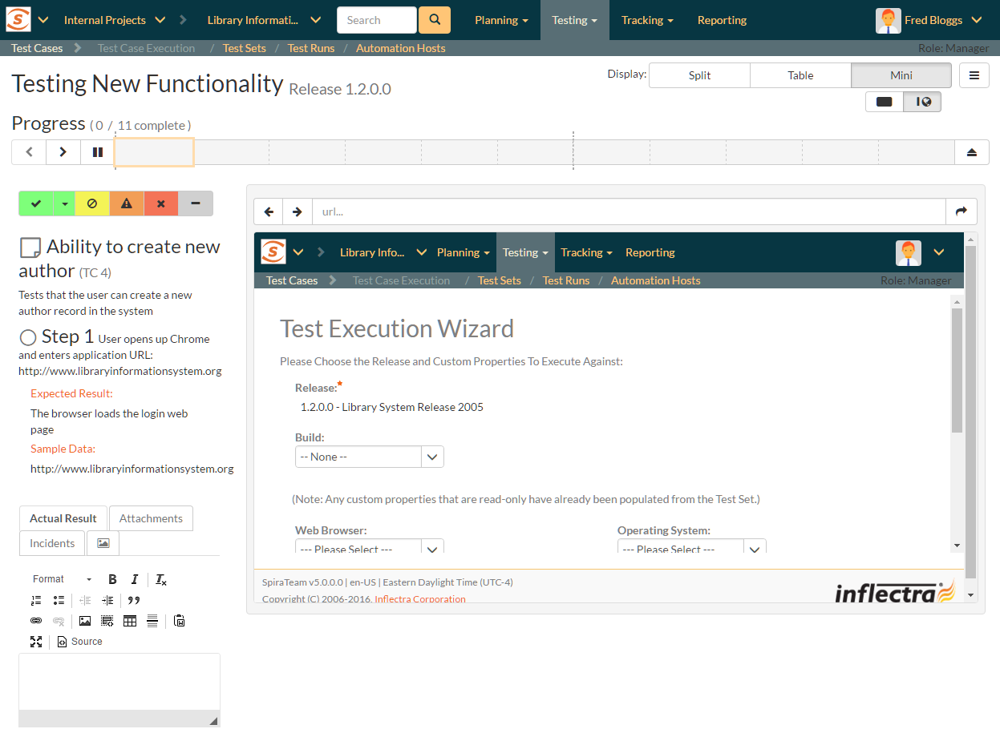
Navigating Around a Test Run
There are several ways to move through the different cases and steps of a particular test run. In the default "split" mode you are guided through a test run in order, however at any time, in any display mode, you can easily and quickly move steps. Note that if you click on a test case, the first test step in that test case will be selected as well.
Using the progress bar buttons: the left-hand side of the progress bar has three buttons: backward, forward, and play/pause (the last of these is discussed in more detail below). Clicking on the backward or forward buttons will move to the previous or next progress bar indicator block (and the associated test step or test case).

Using the progress bar indicator blocks: clicking on any indicator block will immediately focus the test execution area on that test step or test case.
Using the table: when the table view is visible (in either split mode or table mode) clicking on any item will immediately focus the test execution area on that test step or test case.
Progressing through steps using the inspector: when the inspector is visible (in split or mini display mode), on properly setting a status for a test step (see Viewing and Recording Execution Details for further details), the next test step is automatically loaded into the inspector. If you were on step 3 of 5, you would be moved to step 4. If you were on the last step of a test case, you will be moved to the next test case, if one is available.
Pause/Play button: the time spent on every test step is recorded, by default, during test execution. This allows an accurate assessment of exactly how long a test run took to complete and these timing details are saved with the test run and its results. If you wish to pause the behind-the-scenes timer (for instance if taking a break) click the pause/play button. To resume the time click it again.
The currently selected progress bar indicator block will be outlined with a peach border. The currently selected test case and test step on the table view will be indicated with a peach bar along their left edge, and will also be highlighted in a light peach.

Viewing and Recording Execution Details
There is a small icon to the left of each test step title and test case title. For test steps this is a circle, for test cases a square note. Once a status has been recorded for a test step (or once a test case has been assigned a status based on the statuses of its test steps) these icons will be filled with a visual indicator of its current status. The icons both become colored and are given a small symbol, based on the status. In the inspector view the associated button to that status has a gray bar beneath it.

The same colors and symbols used to show a status are used on the buttons to record a status. The colors and symbols used are: green / tick = "Passed"; yellow / stop sign = "Blocked"; orange / warning triangle = "Caution", red / cross = "Failed", gray / dash = "Not Run".
Depending on the display mode and device, the buttons may show the text name of the status along with the symbol (see examples below---the top button set is that on the inspector, the bottom from the table (when the display mode is set to table).


The various statuses when recorded against test steps will appear as below, respectively:

You will notice that softer shades are used above compared to the buttons. Similarly soft shades are also used on the progress bar indicator blocks, as shown below.

The status of a test case is determined by its test steps. If any of the steps are marked as "Caution", "Blocked", or "Fail" then the overall test case is marked with the most severe status of those statuses applied to any of the test steps from "Caution", to "Blocked", to "Fail" (e.g. if one is marked as "Caution, the test case will be marked "Caution"; but if one is marked as "Caution", and another "Blocked", the case will be marked "Blocked). If all the test steps passed, or if steps are marked either passed or "N/A", then the overall test case is marked as "Passed"; any other case results in the test case being marked as "Not Run".
If the expected results are indeed observed, then you simply need to click the "Pass" button to mark the test step as passed, and advance to the next test step, or if all the steps have passed, you can click "Pass All" to pass all the steps at once.
On the inspector, the "Pass All" button is visible via a dropdown to the right of the "Pass" button whenever the parent test case information is also displayed with the test step (typically only for the first step in a test case). This is illustrated in the screen shot below:

When in the table display mode, the "Pass All" button is shown on the right-hand side of the test case row, as illustrated below:

Below the main pane there are two optional sections. The first one allows you to log an incident in the system associated with the test step. For failures this will typically be used to log a bug relating to the failure. However even if you pass a step you can still log an incident, which may be useful for logging non-critical cosmetic items that are not serious enough for a failure to be recorded. This tab also displays any pre-existing incidents that were associated with the test step being viewed.
The second tab displays a list of attachments that are related to the current test case and/or test step. This list initially contains any documents that have been attached to either the test case in general or the test step in particular. However as you perform the testing, you can attach additional documents to this list that are relevant to the test results (e.g. screenshots of an error page); these attached documents will be associated with both the test run itself and any incidents that are created.
Once all the test steps have passed, you will be automatically be taken to the first step in the next test; if it is the last test case being executed, the <Finish> button will be displayed instead.
If the actual results differ from those expected, you need to enter a description of the actual result observed and click one of the "Fail", "Caution" buttons. Unlike the "Pass" button, if you don't enter a description for the actual result, the system will display an error message and re-prompt you again for input.
In the inspector, the actual results text box is shown in the first tab below the information provided to the tester for a test step, as illustrated below:
In the table display mode, previously entered actual results are always visible (below the information provided to the tester for a test step). On attempting to mark a step as anything other than "Pass" the actual results text box will automatically be displayed.
You can also choose to manually show the actual results text box by selecting "Actual Result" option from the "+" dropdown menu.

Saving Screenshots to a Test Step
Often, testers will want to provide visual documentation of what they have found during the testing process. A screenshot of what they are testing is a great way to do this. To add a screenshot to the results of a test step, first copy your screenshot to the clipboard. Next, paste the screenshot into the actual results text box.
Recording Extra Information
In addition to logging the result of a test step, you can optionally choose to generate a new incident at the point of logging the execution status of a test step. When the incident form is visible (see below) enter a name, type, priority, severity (and any custom properties) for the new incident before clicking an execution status button. The other information needed for the new incident is automatically populated from the test step details. The newly created incident will also be linked to the test step, allowing traceability from within the incidents module. The functionality for managing incidents is described in more detail in Incident Tracking.
If the inspector is visible, go to the "Incidents" tab. This will show any already linked incidents, show a detailed form for creating a new incident.
You can instead link the test step to an existing incident (by clicking the "Link Existing Incident" button). The following popup will be displayed, where you can either enter an incident ID (if known), or choose one from the list.
When in the table display mode, open the "+" dropdown menu to show options to either add a new incident or link an existing incident. Click on the option required to display the appropriate popup. Note that on clicking "Add" the incident will be immediately linked to the selected test step.
If you need to attach documents to the test run (in addition to any screenshots), you can either attach a new or link an existing document. From the inspector, go to the "Attachments" tab to see any documents already linked, or to add a document as needed. In the table display mode, select either "Add New Attachment" or "Link Existing Attachment" from the "+" dropdown menu. See Attachments for additional information about how to the different available options (e.g. either upload a document, url link, or screenshot, or to link a document or from source code).
Leaving the Test Execution Page
If you are not able complete the whole test run in a single session, click the "Leave" button on the right of the progress bar---shown with an eject symbol (see below). This will return you to the page where you began the execution from. You can resume testing at a later date by locating the test run on your 'My Page' under 'My Pending Test Runs' and choosing to resume testing. Note that the system will remember every result you have logged, along with the last test step you were working so you can pick up right where you left off.

Once either all steps in a test have an execution status recorded, or at least one step in each test case has been recorded with any status other than "Pass" the test run can be finished. An orange button at the far right of the progress bar with a stop symbol will appear (see below). Clicking this button will save and archive the entire test run (so it can no longer be amended) and the page will automatically exit the test execution page.
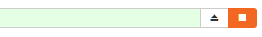
Extra Test Execution Options
There are a number of ways that some users may wish to alter the test execution page, depending on how they work. Options to change this are available from the menu button to the right of the display buttons.

The following actions are available from this dropdown menu:
Refresh: this simply reloads the test run data. This is useful if other people are working on different test cases within the same test run and you want to make sure that you have the most current information about the statuses they have recorded.
Always show test case: by default, the inspector only shows the test case details when the first test step of a test case is displayed. Checking this item will mean that the test case details will be shown on every test step.
Show custom properties: by default, only a handful of system fields are shown for the test case and test step. If your organization places important and relevant information into custom fields as well, you can check this item to make them visible in the inspector for every case and step. Note that these fields will not be visible in the table display mode.
Show guided tour: if you missed or want to revisit the visual guided tour of the test execution page, click this button to run the tour again.
Exploratory Test Execution
As mentioned above, there are a number of conditions that must be satisfied for a test to run in exploratory mode. Exploratory testing is designed for relatively experienced testers and rather than to record the results of a pre-determined set of steps, to instead adjust and create the testing sequence during the act of testing itself. During exploratory testing test steps can be added, removed, edited, moved freely, at any time.
Care must therefore be taken that this form of testing and of recording the results of a test are used appropriately. The conditions set by the system are one means of limiting its use.
When starting exploratory testing the main screen will resemble the one below. Note that it looks broadly similar to that for standard test execution and is made up of three different areas:
-
a list of test steps on the left;
-
details about the currently selected step on the right; and
-
information at the top of the page about the test run itself (it's name and description, release, and how many steps it contains), along with a mini toolbar. In exploratory testing there is no progress bar, or options to layout the page in different views.

All fields in the right hand details area, or the top part of the page can often be edited. Their contents and associated label will be grayed out if they are read only fields (for instance if they are information from a custom property). To edit a field, click on it, change the text as required, then click out of the field. The information will be automatically saved. Note that any test steps that come from a link test case will be read only and as such their contents cannot be edited, nor can they be deleted.
Just like with normal test execution, you can navigate between steps using the list of steps on the left; and steps can be passed, or failed using the execution status toolbar on the right hand section of the page. The unique actions you can take on test steps (besides editing their fields) are below:
-
add a step: click on the plus button beneath the list of test steps on the left
-
clone an existing step: when you hover a test step in the list, you will see a button appear on its right. Click on this to show a mini menu with an option to clone the step. This will create a clone, at the bottom of the list of test steps, with a blank actual result


-
delete an existing step: if you have more than one test step, any editable test step can be deleted. Click on the button for that step (as explained above) and click delete from the mini menu.
-
move an existing step: to move an editable step click and drag it to the desired location in the test step list.
Below the main detailed section there are two or three tabs. SpiraTest users will only see two tabs -- incidents and attachements. SpiraPlan users will additionally see a tasks tab. The incident and attachment tabs function identically to normal test execution.
The task tab allows the tester to quickly create tasks based on their exploratory testing, and optionally assign them to a user involved in the product. These tasks are attached to the test run as a whole, so any previously entered tasks will be visible even when changing steps. Creating a task is a light touch way of communicating with others about your findings and alerting them that some work is likely required to fix or clarify a feature. It is quicker to enter and manage than an incident.

Tasks are shown as a list of cards with their left edge showing their priority by color. On creation a task's status will be gray -- showing that no priority has yet been set. The title of the task can be clicked to open the details page for that task.

The toolbar at the top right of the page has a number of buttons:

-
Pause/Play button: the time spent on every test step is recorded, by default, during test execution. This allows an accurate assessment of exactly how long a test run took to complete and these timing details are saved with the test run and its results. If you wish to pause the behind-the-scenes timer (for instance if taking a break) click the pause/play button. To resume the time click it again.
-
Leave button: as with normal test execution, if you are not able complete the exploratory test in a single session, click the "Leave" button---shown with an eject symbol. You can resume testing at a later date by locating the test run on your 'My Page' under 'My Pending Test Runs' and choosing to resume testing. Note that the system will remember every result you have logged, along with the last test step you were working so you can pick up right where you left off.
-
Finish button: once either all steps in a test have an execution status recorded, or at least one step has been recorded with any status other than "Pass" the test run can be finished. An orange with a stop symbol will appear (see below). Clicking this button will give you two options. "Update Test Case" will update the test case execution status, and also change its name, description, and test steps to reflect those on this page (adding, deleting, moving, editing as necessary). "Just Finish" will only change the execution status of the test case only---leaving all details of the test case unchanged. Either option will archive the entire test run (so it can no longer be amended) and the page will automatically exit the test execution page.

- Options: the right most button on the toolbar gives additional options for customizing the page. Specifically a user can decide what fields they wish to show or hide based on how they prefer to work in exploratory testing mode. Additionally this menu let's you revisit the introductory tour shown the first time the page is visited.

Test Run List
When you click on the Testing > Test Runs global navigation link, you will be taken to the test run list screen illustrated below:

The test run list screen displays all the individual test executions performed in the current product, in a filterable, sortable grid. The grid displays the test run number together with fields such as execution status, name, assigned tester, execution date, test set, specified release, etc. The choice of columns displayed is configurable per-user, per-product, giving extensive flexibility when it comes to viewing and searching test runs.
In addition, you can view a more detailed description of the test run by hovering over the test run name hyperlink to display a "tooltip". If you click on this test run hyperlink, you will be taken to the test run details page described in the next section. Clicking on any of the pagination links at the bottom of the page will advance you to the next set of test runs in the list according to the applied filter and sort-order. There is also a drop-down-list at the bottom of the page which allows you to specify how many rows should be displayed in each page, helping accommodate different user preferences.
Refresh
Clicking on the "Refresh" button simply reloads the test run list. This is useful as other people may be completing test runs, and after stepping away from the computer for a short-time, you can click this button to make sure you are viewing the most current test run list for the product.
Show / Hide Columns
This drop-down list allows you to change the fields that are displayed in the test run list as columns for the current product. To show a column that is not already displayed, simply select that column from the list of "Show..." column names and to hide an existing column, simply select that column from the list of "Hide..." column names. This is stored on a per-product basis, so you can have different display settings for each product that you are a member of. The fields can be any of the built-in fields or any of the custom properties set up by the product owner.
Sorting and Filtering
You can easily filter and sort the list of test runs. To filter the list by any of the visible fields, you simply choose an item from the appropriate drop-down list, and for the other fields, you enter a free-text phrase then click <Filter> or press the <ENTER> key to apply the different filters. Note that the name field is searched using a "LIKE" comparison, so that searching for "database" would include any item with the word database in the name.
To change the column that is sorted, or to change the direction of the current sort, simply click on the up/down arrow icon in the appropriate column. The currently sorted column is indicated by the darker arrow. In the screen-shot above, we have filtered on test runs that have failed, sorted in order of increasing release version number.
Clicking on Filter > Clear Filter removes any set filters and expands the test run list to display all test runs for the current product, and clicking on Filter > Save Filter allows you to save the filter to your 'My Page' for use in the future. The list of saved filters can also be retrieved by clicking Filter > Retrieve Filter.
As a shortcut, the left hand panel includes a set of Quick Filters that can be applied in a single-click:
-
The topmost section -- This displays any saved requirement filters created by the current user alongside any 'shared' filters. The latter are marked with an icon showing a group of people.
-
Releases -- This section lists the releases and sprints defined for the current product. Clicking on any of the releases or sprints in the list will filter the requirements by that release/sprint.
Printing Items
To quickly print a single test run or list of test runs you can select the items' checkboxes and then click the Print icon. This will display a popup window containing a printable version of the selected items.
Test Run Details
When you click on any of the individual test runs in the test run list, you are taken to the Test Run details page (not to be confused with the Test Case details page) shown below:
This page consists of three panes:
-
The left hand navigation pane displays a list of related test runs with a color indicator for their current execution status. The display dropdown will let you choose whether the list contains test runs that are for the same release, test case or test set, or are just a filtered/unfiltered list based on your last search in the main test run list page.
-
The top right area shows headline information about the test run details of the test run itself
-
The main pane on the right displays tabs for detailed information about the test run, and its associations. The overview tab is initially loaded and shows the name, description, release, test set, estimated and actual duration, tester name, test run type, automation host fields, along with others, including custom fields. Underneath this is shown the list of test run steps, and any console output from a test automation engine such as Rapise, NUnit, JUnit, QTP, or Selenium.
Re-running a Test
There is a button on the main test run toolbar called 'Re-Test". If you click this button, SpiraPlan will launch the test execution wizard for this specific test case, with current release and/or test set already selected for you. This is a handy way of quickly re-running a failed test that has been addressed by the developers.
Editing a Test Run
When reviewing the test run, you may find that you need to change the results of the test run (e.g. the user selected the wrong release or custom property value). Many of the fields are editable at a later date, and to make changes, just modify the appropriate fields and click any "Save" button.
Deleting the Test Run
If you need to delete a test run that was erroneously captured, all you need to do is click on the link to access the invalid test run and then click the "Delete" button to remove it from the system. This will then force the system to update the status of the test case itself from the other logged test runs.
Test Run Steps
In the case of a manual test run, this section displays all the steps of the test case as they appeared during the test run in question. This means that if the test steps were changed after running the test, the list here will reflect the original information.
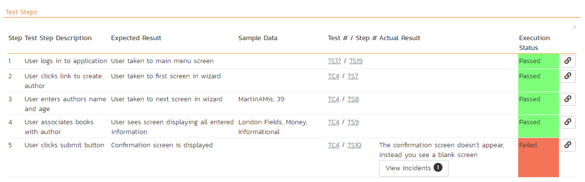
Each test run step is displayed along with the description, expected result, suggested sample data, a link back to the current version of the test step in question, the actual result and the execution status for this step in this particular test run. Where an actual result was recorded, an additional "View Incidents" button will be displayed. This allows you to view any incidents that are associated with this particular test run step:
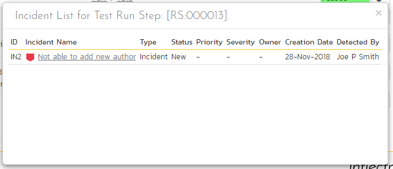
Clicking on the link will open up a popup dialog box that displays a list of all the incidents associated with the selected test run step. Each of the incidents listed will reflect the most up-to-date information regarding that incident, including its type, status, priority, name, assigned owner, detection date and who first detected it. Clicking on the incident name will take you to the details page for that incident, which is described in Incident Tracking > Incident Details.
Console Output
In the case of an automated test run, this tab will display the details of the test run as reported from the test runner application. These details will vary depending on the type of automated tool being used, but typically they include the name of the automated test runner, the number of assertions raised, the name of the corresponding test case in the tool, the status of the test run and a detailed error message, and the stack-trace in the case of a failure. An example test run as reported from the NUnit automated test runner is illustrated below:

Details on how to use SpiraPlan® in conjunction with an automated testing tool are provided in the SpiraPlan® Automated Testing Integration Guide, which can be downloaded from the Inflectra® website.
Attachments
This tab shows the list of documents that have been "attached" to the test run. The documents can be in any format, though SpiraPlan® will only display the icon for certain known types.
The attachment list includes the filename that was originally uploaded together with the file-size (in KB), name of the person who attached it and the date uploaded. In addition, if you position the pointer over the filename and hold it there for a few seconds, a detailed description is displayed as a tooltip.
To view the document, click on the filename hyperlink and a new web browser window will open. Depending on the type of file, this window will either display the document or prompt you for a place to save it on your local computer. To remove an existing attachment from a test run, check its checkbox then click the "Remove" button and the attachment will be removed from the list.
To attach a new document or web link to the test run, you need to click on the "Add New" hyperlink to open the "Add Attachment" dialog box. There are three different types of item that can be attached to a test run:
To upload a file, choose "File" as the type and then click the "Browse" button and select the file from your local computer, optionally enter a detailed description then click the "Upload" button. The document will be copied from your computer and attached to the artifact.
To attach a web-link (URL) to the artifact, you need to choose "URL" as the type and then enter the fully qualified URL (e.g. http://mywebsite.com?Document=1), an optional description and then click the <Upload> button to attach the web-link.
To attach a screenshot to the artifact, you need to choose "Screenshot" as the type and then copy the image to your computer's clipboard (e.g. on Windows computers, the PRINT SCREEN button captures the current page and adds to the clipboard). Once the image is in the clipboard, paste it into the editor using CTRL+V (or the equivalent keystroke for your operating system) and the item will appear in the preview window. You can then fill in the other fields and click "Upload" to attach the image.
Note: If you are using a non-Windows® computer (e.g. Macintosh®) that doesn't put file extensions on filenames (e.g. .xls for an Excel sheet) automatically, then you will need to manually add the file extension to the filename before uploading if you want it to be displayed with the correct icon in the attachment list.
You can also associate an existing document (that's already stored in SpiraTeam) with the test run. To do that, click on the "Add Existing" button to bring up the add file association dialog box. You can then choose to either associate a document stored in the SpiraPlan Documents repository or (in the case of SpiraPlan/SpiraTeam but not SpiraTest) from the linked source code repository. In either case you first select the appropriate folder, and then pick the document(s) from the file list on the right. In the case of a source code file association you can also add a comment.
Incidents
This tab displays the list of incidents associated with the current test run. The incidents will have been logged during the creation of the test run and will be linked to one of the steps in the test run:
Each incident is listed together with the type, status, priority, name, owner, detector, detection date and a link to the actual incident details. You can customize the fields that are displayed using the "Show/Hide Columns" option. In addition, you can perform the following operations:
Refresh -- updates the list of incidents from the server, useful if other people are adding incidents to this release at the same time.
You can also filter the results by choosing items from the filter options displayed in the sub-header row of each field and clicking the "Filter" button. In addition, you can quickly sort the list by clicking on one of the directional arrow icons displayed in the header row of the appropriate field.
Edit -- Clicking the "Edit" button to the right of the incident allows you to edit the incident inline directly on this screen.
Tasks
This tab is only visible to users of SpiraPlan. It shows the list of tasks associated with the current test run. Tasks can only be added to a test run created from an exploratory test case. These tasks will have been logged during the execution of the test.

History
This tab displays the list of changes, if any, that have been performed on the requirement artifact since its creation. An example requirement change history is depicted below:
The change history displays the date that each change was made, together with the fields that were changed, the old and new values and the person who made the change. This allows a complete audit trail to be maintained of all changes in the system. In addition, if you are logged in as a product administrator you can also click on the "Admin View" button to revert any unwanted changes.
Test Set List
As well as being able to organize test cases into folders, you can also create separate groupings of test cases called test sets which can then be assigned to testers as a package. To view the list of test sets for a product, click on Testing > Test Sets in the global navigation:

The test set list consists of hierarchical list of all the test sets in the current product organized into folders. The structure is very similar to the folder structure in Microsoft Windows® Explorer, and users will find this very familiar and intuitive to use. A folder tree is on the left hand side---with triangle icons to expand / collapse each folder. Contents of the selected folder (the one marked in bold on the folder tree) are shown on the right hand side.
When you create a new product, this list will initially be empty, and you will have to use the "New Test Set" button to start adding test sets to the system.
Each test set is listed along with the number of test cases contained (in parenthesis), the aggregate execution status of the contained test cases (using a graphical bar-chart), the date that the test set has been scheduled to be executed (planned date), the date that it was last executed, the person currently assigned to execute the test set, the status and the test set id. Clicking on a test set's hyperlink will take you to the test set details page for the item in question.
Note: the test set status is separate from the execution status of the individual test cases and represents where the test set is in its lifecycle:
-
Not Started -- The test set has been assigned to a tester or automation host and no testing has been performed.
-
In Progress -- The test set has been assigned to a tester or automation host and the testing is in progress.
-
Completed -- The test set was previously assigned, but has now been completed, with all test cases having an execution status recorded and the tester having clicked the Finish button in the test execution wizard.
-
Blocked -- The tester or automation host was unable to execute the assigned test set because of a failure external to the actual test case.
-
Deferred -- The test set was previously assigned, but: execution had not been completed (at least one test case does not have a recorded execution status); and the Tester deleted the Pending Test Run entry from their My Page.
Delete
Clicking on the "Delete" button deletes the currently selected test sets. It will delete the association between the test set and its contained test cases, but it will not delete the test cases themselves.
Refresh
Clicking on the "Refresh" button simply reloads the list of test sets. This is useful if other people are making changes to the test set list and you want to make sure that you have the most current version.
Focus On
The "Focus On" button is a useful when you have performed a filter on the list of test sets and then wish to quickly navigate to the folder of a particular test set shown in the list. After selecting a test set, clicking the button will move the left hand folder tree to the folder that contains the selected test set. It will also change the list view on the right to show all of the test sets within that folder (i.e. the selected test set and its siblings).
Edit
Each test set in the list has an "Edit" button in its right-most column. When you click this button, double-click on any of the cells in the row, or select a row and click the "Edit" button in the toolbar at the top of the page. This will change the item from "View" mode to "Edit" mode. The various columns are made editable, and "Save" and "Cancel" buttons are displayed in the last column:

If you click "Edit" on more than one row, the "Save" buttons are only displayed on the first row, and you can make changes to all the editable rows and then update the changes by clicking the one "Save" button. Also, if you want to make the same change to multiple rows (e.g. to change the owner of five test sets from "Fred Bloggs" to "Joe Smith"), you can click on the "fill" icon to the right of the editable item, which will propagate the new value to all editable items in the same column.
If you want to edit lots of items, first select their checkboxes and then click the "Edit" button on the same row as the Filters and it will switch all the selected items into edit mode.
When you have made your updates, you can either click "Save" to commit the changes, or "Cancel" to revert back to the original information. Alternatively, pressing the <ENTER> key will commit the changes and pressing the <ESCAPE> key will cancel the changes.
Show / Hide Columns
This drop-down list allows you to change the fields that are displayed in the test set list as columns for the current product. To show a column that is not already displayed, simply select that column from the list of "Show..." column names and to hide an existing column, simply select that column from the list of "Hide..." column names. This is stored on a per-product basis, so you can have different display settings for each product that you are a member of. The fields can be any of the built-in fields or any of the custom properties set up by the product owner.
Filtering
You can easily filter the list of test sets. To filter the list by any of the displayed columns, you either choose an item from the appropriate drop-down list or enter a free-text phrase (depending on the type of field) then click "Filter" or press the <ENTER> key to apply the different filters. Note that the Name field is searched using a "LIKE" comparison, so that searching for "database" would include any item with the word database in the name. The other free-text fields need to be exact matches (e.g. dates, test set numbers). In the screen-shot below, we are filtering on test sets that contain at least one failed test case.
In addition, if you have a set of filters that you plan on using on a regular basis, you can choose the option Filter > Save Filter to add the current filter to the list of saved filters that appear on your 'My Page'. The list of saved filters can also be retrieved by clicking Filter > Retrieve Filter.
Because the same test set can be run against more than one release, sometimes you want to see the execution information for the displayed test sets for different releases. If you select a release or sprint from the dropdown marked "All Releases" on the right above the table, then the execution information for that specific release will be displayed. If the dropdown is set to "all releases", then it shows only the most recent execution information. In both cases, all test sets (as per any filter) are listed.
Copying Test Sets
To copy one or more test sets, simply select the check-boxes of the test sets you want to copy and then select the Edit > Copy Items menu option. This will copy the current test set selection to the clipboard. Then select the place where you want the test sets to be inserted and choose the Edit > Paste Items option.
The test sets will now be copied into the destination you specified. The name of the copied test sets will be prefixed with "Copy of..." to distinguish them from the originals.
Moving Test Sets
There are two options for moving test sets or folders:
- Click on the test set/folder you want to move in the right hand list and drag it to the folder in the left hand folder tree you want it moved to. The background of the new folder will change to show where it will be inserted:
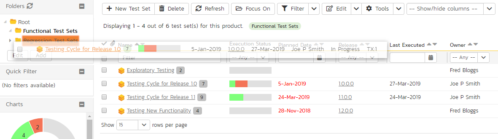
Once you have the test set/folder positioned at the correct place that you want it inserted, just release the mouse button. To move multiple items simply select their checkboxes and then drag-and-drop one of the selected items.
- Alternatively you can simply select the check-boxes of the test sets you want to move and then select the Edit > Cut Items menu option. This will cut the current test set selection to the clipboard. Then select the place where you want the test cases to be inserted and choose the Edit > Paste Items option. The test sets will now be moved into the destination specified.
Printing or Exporting Items
To quickly print a single test set, test set folder or list of test sets you can select the items' checkboxes and then click Tools > Print Items. This will display a popup window containing a printable version of the selected items.
Alternatively you can save the selected items into a number of formats, available via the Tools dropdown.
Right-Click Context Menu
SpiraPlan® provides a shortcut -- called the context menu - for accessing some of the most commonly used functions, so that you don't need to move your mouse up to the toolbar each time. To access the context menu, right-click on any of the rows in the test set list and the following menu will be displayed:

You can now choose any of these options as an alternative to using the icons in the toolbar.
Test Set Details
When you click on a test set item in the test set list described in the previous section, you are taken to the test set details page illustrated below:
This page is made up of three areas;
-
the left pane displays the test set folders and list navigation;
-
the right pane's header, which displays: the operations toolbar; the editable name of the selected test set; and the info bar (with a shaded background), which also contains the workflow status transitions (see below); and
-
the right pane's tabbed interface with rich information related to the test set.
The navigation pane consists of a link that will take you back to the test set list, as well as a list of the peer test sets to the one selected. This latter list is useful as a navigation shortcut; you can quickly view the detailed information of all the peer test sets by clicking on the navigation links without having to first return to the test sets list page. The navigation list can be switched between three different modes:
-
The list of test sets matching the current filter
-
The list of all test sets, irrespective of the current filter
-
The list of test sets assigned to the current user
If you are editing an existing item, the fields that are available and the fields that are required will depend on your stage in its workflow. The types of change allowed and the email notifications that are sent will depend on how your product administrator has setup the system for you. Administrators should refer to the SpiraPlan Administration Guide for details on configuring workflows to meet their needs.
Depending on the user's role and whether they are listed as the owner or author of the test case, displayed in the info bar beneath the test case name is the current workflow status and an "operations" button which, when clicked, will show a set of allowed workflow operations. These workflow transitions allow the user to move the item from one status to another.
The top part of the right pane allows you to view and/or edit the details of the particular test set. You can edit the name and once you are satisfied any changes to the test set, click the "Save" button at the top of the page to commit the changes (or the options available via the save dropdown). In addition you can delete the current artifact by choosing "Delete", discard any changes made by clicking "Refresh", create a duplicate of the current artifact by clicking "Clone", or export to a number of files formats or print it via one of the options in the Tools dropdown menu.
The "Execute" button allows you to execute all the tests in the set against the release specified in the test set.
Using the "Email" button on the toolbar, you can send an email containing details of the requirement to an email address or another user on the system:

You can specify the subject line for the email, and either a list of email addresses, separated by semicolons, or an existing product user .The content of the email is specified in the System Administration -- Notification Templates.
To be notified of any changes made to the current artifact via email, click the "Subscribe" button. If you already subscribed, the button will instead let you "Unsubscribe" to stop receiving emails about that particular artifact.
The lower part of the right pane can be switched between different views by clicking the appropriate tab. Initially the pane will be in "Overview" mode, but it can be switched to "Test Runs", "Attachments", "Incidents" and "History" modes if so desired. Each of the views is described separately below.
Overview -- Details
The top part of this tab displays the various standard fields and custom properties associated with the test set. Fields (both standard and custom) are grouped under the collapsible headings (marked by orange text and underline) in the screenshot below. For instance, all fields regarding dates are grouped together in the "Dates and Times" area.
The Detailed Information section contains the long, formatted description of the test case, as well as any rich text custom fields. You can enter rich text or paste in from a word processing program or web page. Clicking on the shaded areas of one of these detailed fields will display the rich text toolbar.
Test Sets can be specified as being either for "Manual" or "Automated" test runs (via the "Type" field. If you choose Manual, then the test set can be executed by a tester from their "My Page." However if you choose "Automated", the test set will be executed by the automation host you specified. In this case, the planned date and time will be used by the automated test engine to know when to execute the automated test scripts. For manual test sets, only the date component is used. In addition, you can specify a recurrence schedule for the test set by changing the recurrence dropdown from "One Time" to "Hourly", "Daily", etc. so that SpiraPlan executes the same test set according to the specified frequency. The "Planned Date" field lets you specify the date and time to execute the test using the popup time picker.
The Schedule on Build field will tell SpiraTest to automatically set the Planned Date to the current date/time plus the Post Build Wait Time offset (in seconds) whenever a new build is performed against the release or sprint that the test set is scheduled for. This allows you to automatically run a set of regression tests immediately after a build is completed.
If you have test configuration sets defined in your product, you can assign them to a specific Test Set and use them for both manual and automated testing by setting the Configuration dropdown value. If you have a test configuration associated with the test set, when you execute the test set, SpiraPlan will generate a test run entry for each of the test configuration entries multiplied by each of the test cases in the set.
The Description section contains the long, formatted description of the test set. You can enter rich text or paste in from a word processing program or web page.
Overview - Followers
Using the "Subscribe" button on the toolbar, you can quickly follow the item, and receive updates on certain changes to it. Depending on your role, you may also see a dropdown to this button, which let's you add another product member as a follower to this item.
You can also quickly see who is following an incident under the "People" section in the Overview tab.
To view information about the follower, or to unfollow them from the item, hover over their avatar to display a user profile card.
Overview - Comments
The Comments section allows users to add and view discussions relating to the test set:
Existing comments are displayed by date (either newest-first or oldest-first) above the text box. To add a comment to the Test Set, enter your text into the textbox, then click the "Add Comment" button.
Overview - Parameters
As discussed in Parameters. test cases can have parameters associated with them. This enables one test case to be called several times and have different parameters passed in each case, making the operation different. E.g. you could have a generic "login to application" test case that others call as an initial step, which could be provided with different login information depending on the calling test case. In addition these parameters may be used by certain test automation engines.
The Parameters section on the test set page lets you set a shared value for all of the parameters contained within the different test cases of the test set. The screenshot below shows that there are three parameters contained in the test cases that have been set at the test set level. In this example, every case that has a Parameter called 'browserName' will have its value set to 'Safari'. This is a quick way of setting values for many test cases at once. Test Set Values will override any default values of a Parameter (defined for each specific test case).

You can add any additional Parameters not already set by clicking on the "Add Parameter Value" button. In this example, you can see that one of the parameters not yet set is called 'url'.

You can also delete an existing Parameter specified for the whole test set by clicking the "Delete" button in the Operations column of the Parameter in question. Clicking the "Edit" button will let you alter the Test Set Value.

Note that the Default Value is derived from the test cases that use a specific Parameter. It is shown in this table for information only---to help testers know what value will be run in the absence of specifying a Test Set Value.
Overview - Test Cases
This section displays the list of test cases contained within the test set. You can add, remove, reposition and remove test cases from the list. The execution status displayed next to each test case is the most recent execution status of the test case when run in the context of the current test set.

To move the test cases, click the test case icon and drag it to the appropriate position in the list.
To modify an existing Test Case click the "Edit" button in the right-most column, or double-click on the cells in the row. That will switch the selected row into Edit mode. The owner field can then be set at the test case level. This is useful in situations where you want the different test cases in the set to be executed by different testers (e.g. in integrated, scenario tests)

To add a new test case to the Test Set, click on the "Add" button to display the panel:

First, select the folder containing the test cases desired. You can then select the checkboxes of the individual test cases that you want to add to the test set (note: clicking the checkbox in the header row of the table will select ever test case in the currently selected folder). Once you have selected the desired items, click the "Save" button to add them to the test set.
As discussed above in Overview - Parameters, test cases can have parameters defined with specific values. These are created on the Test Case details page (see Parameters). If you need to specify different values for a parameter for different test cases in the test set, you can override both any default parameter values and any test set parameter values. To do so, click "Edit Parameters" for the required test case in this view. You can do this by either select the checkbox of a test set and click "Edit Parameters" at the top of the section, or right-click on the test case and choose "Edit Parameters":

You can then specify the values of the parameters that the test set will pass to this specific test case. Once you have entered / modified the values, click "Save" to commit the changes.
Overview - Comments
The Comments section allows users to add and view discussions related to the Test Set:

Existing comments are displayed by date (either newest-first or oldest-first) above the text box. To add a comment to the Test Set, enter your text into the textbox, then click the "Add Comment" button.
Test Runs
This tab displays the list of all the test runs executed against the test set. Each test run is listed together with the date of execution, the name of the test case, the name of the tester, the release/version of the system that the test was executed against, the overall execution status for the test case in that run and a link to the actual test run details. In addition, you can choose to display any of the custom properties associated with the test run.

The "Show/hide columns" drop-down list allows you to change the fields that are displayed in the test run list as columns. To show a column that is not already displayed, simply select that column from the list of "Show..." column names and to hide an existing column, simply select that column from the list of "Hide..." column names. The displayed columns can be any standard field or custom property.
You can also filter the results by choosing items from the filter options displayed in the sub-header row of each field and clicking the "Filter" button. In addition, you can quickly sort the list by clicking on one of the directional arrow icons displayed in the header row of the appropriate field.
Attachments
This tab displays the list of documents that have been "attached" to the test set. The documents can be in any format, though SpiraPlan® will only display the icon for certain known types.
The attachment list includes the filename that was originally uploaded together with the file-size (in KB), name of the person who attached it and the date uploaded. In addition, if you position the pointer over the filename and hold it there for a few seconds, a detailed description is displayed as a tooltip.
To actually view the document, click on the filename hyperlink and a new web browser window will open. Depending on the type of file, this window will either display the document or prompt you for a place to save it on your local computer. To remove an existing attachment from a test set, select an attachment using the checkbox and click the "Remove" button. The attachment will be removed from the list.
To attach a new document to the test set, you need to first click the "Add New" link to display the new attachment dialog box:
There are three different types of item that can be attached to a requirement:
To upload a file, choose "File" as the type and then click the Browse button and select the file from your local computer, optionally enter a detailed description then click the "Upload" button. The document will be copied from your computer and attached to the artifact.
To attach a web-link (URL) to the artifact, you need to choose "URL" as the type and then enter the fully qualified URL (e.g. http://mywebsite.com?Document=1), an optional description and then click the "Upload" button to attach the web-link.
To attach a screenshot to the artifact, you need to choose "Screenshot" as the type and then copy the image to your computer's clipboard (e.g. on Windows computers, the PRINT SCREEN button captures the current page and adds to the clipboard). Once the image is in the clipboard, paste it into the editor using CTRL+V (or the equivalent keystroke for your operating system) and the item will appear in the preview window. You can then fill in the other fields and click "Upload" to attach the image.
Note: If you are using a non-Windows® computer (e.g. Macintosh®) that doesn't put file extensions on filenames (e.g. .xls for an Excel sheet) automatically, then you will need to manually add the file extension to the filename before uploading if you want it to be displayed with the correct icon in the attachment list.
You can also associate an existing document (that's already stored in SpiraTeam) with the test set. To do that, click on the "Add Existing" button to bring up the add file association dialog box:
You can then choose to either associate a document stored in the SpiraPlan Documents repository or (in the case of SpiraPlan/SpiraTeam but not SpiraTest) from the linked source code repository. In either case you first select the appropriate folder, and then pick the document(s) from the file list on the right. In the case of a source code file association you can also add a comment.
Incidents
This tab displays the list of incidents associated with the current test set. Each incident will either have been: created during the execution of a test case in the test set (and are thereby linked to one of the test runs); or manually linked to one of the test steps in a test case of the set.

History
This tab displays the list of changes that have been performed on the test set artifact since its creation. The change history displays the date that each change was made, together with the fields that were changed, the old and new values and the person who made the change. This allows a complete audit trail to be maintained of all changes in the system. In addition, if you are logged in as a product administrator you can also click on the "Admin View" button to revert any unwanted changes.
Automation Host List
This section outlines how to use the Automation Host Management features of SpiraPlan® to manage the different host systems that will be running automated tests in your environment. Typically when scheduling automated tests you will want to execute the same tests on multiple computers running different environments.
SpiraPlan allows you to build a master list of automation hosts in each product, which can be used to schedule test sets containing automated test cases against. Please refer to the Test Set section of this manual for more information on managing and scheduling test sets.
When you click on the Testing > Automation Hosts global navigation link, you will initially be taken to the automation host list screen illustrated below:

The automation host list screen displays all the automation hosts entered for the current product, in a filterable, sortable grid. The grid displays the automation host ID together with fields such as name, description, last updated date, token, and any custom properties. The choice of columns displayed is configurable per-user, per-product, giving extensive flexibility when it comes to viewing and searching automation hosts.
In addition, you can view a more detailed description of the automation host by positioning the mouse pointer over the host name hyperlink and waiting for the popup "tooltip" to appear. If you click on the host name hyperlink, you will be taken to the automation host details page. Clicking on any of the pagination links at the bottom of the page will advance you to the next set of hosts in the list according to the applied filter and sort-order. There is also a drop-down-list at the bottom of the page which allows you to specify how many rows should be displayed in each page, helping accommodate different user preferences.
One special column that is unique to automation hosts is the "Token" field. This needs to contain a short textual identifier that uniquely identifies each automation host in the product. This will be used by each host computer to identify itself to SpiraPlan.
Sorting and Filtering
You can easily filter and sort the list of automation hosts. To filter the list by one of the displayed fields, you simply choose an item from the appropriate drop-down list or enter a free-text phrase then click "Filter" or press the <ENTER> key to apply the different filters. Note that the name field is searched using a "LIKE" comparison, so that searching for "database" would include any item with the word database in the name. The other freetext fields need to be exact matches (e.g. dates, automation host numbers).
To change the column that is sorted, or to change the direction of the current sort, simply click on the up/down arrow icon in the appropriate column. The currently sorted column is indicated by the darker arrow.
Clicking on Filter > Clear Filter removes any set filters and expands the host list to display all automation hosts in the current product, and clicking on Filter > Save Filter allows you to save the filter to your 'My Page' for use in the future. The list of saved filters can also be retrieved by clicking Filter > Retrieve Filter.
New Host
Clicking on the "New Host" button adds a new automation host to the bottom of the automation host list with a default name and token.
Delete
Clicking on the "Delete" button deletes the automation hosts whose check-boxes have been selected in the host list.
Refresh
Clicking on the "Refresh" button reloads the list of automation hosts; this is useful when new hosts are being added by other users, and you want to make sure you have the most up-to-date list displayed.
Show / Hide Columns
This drop-down list allows you to change the fields that are displayed in the host list as columns for the current product. To show a column that is not already displayed, simply select that column from the list of "Show..." column names and to hide an existing column, simply select that column from the list of "Hide..." column names. This is stored on a per-product basis, so you can have different display settings for each product that you are a member of. The fields can be any of the built-in fields or any of the custom properties set up by the product owner.
Edit
Each automation host in the list has an "Edit" button in its right-most column. When you click this button or just double-click on any of the cells in the row, you change the item from "View" mode to "Edit" mode. The various columns are made editable, and "Save" buttons are displayed in the last column.
If you click "Edit" on more than one row, the "Save" buttons are only displayed on the first row, and you can make changes to all the editable rows and then update the changes by clicking the one "Save" button. Also, if you want to make the same change to multiple rows (e.g. to change five automation hosts from Active = No to Active = Yes), you can click on the "fill" icon to the right of the editable item, which will propagate the new value to all editable items in the same column.
If you want to edit lots of items, first select their checkboxes and then click the "Edit" button on the same row as the Filters and it will switch all the selected items into edit mode.
When you have made your updates, you can either click "Save"to commit the changes, or "Cancel" to revert back to the original information. Alternatively, pressing the <ENTER> key will commit the changes and pressing the <ESCAPE> key will cancel the changes.
Automation Host Details
When you click on an automation host entry in the host list, you are taken to the automation host details page illustrated below:

This page is made up of three areas; the left pane is the navigation window, the upper part of the right pane contains the automation host name and ID, and the bottom part of the right pane displays different information associated with the automation host.
The navigation pane consists of a link that will take you back to the host list, as well as a list of the peer automation hosts to the one selected. This latter list is useful as a navigation shortcut; you can quickly view the peer hosts by clicking on the navigation links without having to first return to the host list page. The navigation list can be switched between two different modes:
-
The list of hosts matching the current filter
-
The list of all hosts, irrespective of the current filter
The top part of the right pane allows you to view and/or edit the details of the particular automation host. You can edit the various fields (name, description, token, etc.) and custom properties. Once you are satisfied with the changes, click either the "Save" button or the alternative options from the "Save" dropdown list. In addition you can delete the current automation host by clicking "Delete", or discard any changes made by clicking "Refresh".
Overview
This tab shows the fields and description associated with the automation host. Standard and custom fields are grouped by type (eg all date and time fields are grouped together).
Test Runs
This tab displays the list of all the test runs executed against the automation host. Each test run is listed together with the date of execution, the name of the test case, the name of the tester, the release/version of the system that the test was executed against, the name of the test set (if applicable), the overall execution status for the test case in that run and a link to the actual test run details. In addition, you can choose to display any of the custom properties associated with the test run.

The "Show/hide columns" drop-down list allows you to change the fields that are displayed in the test run list as columns. To show a column that is not already displayed, simply select that column from the list of "Show..." column names and to hide an existing column, simply select that column from the list of "Hide..." column names. The displayed columns can be any standard field or custom property.
You can also filter the results by choosing items from the filter options displayed in the sub-header row of each field and clicking the "Filter" button. In addition, you can quickly sort the list by clicking on one of the directional arrow icons displayed in the header row of the appropriate field.
Attachments
In this tab, the main pane displays the list of documents that have been "attached" to the automation host. The documents can be in any format, though SpiraPlan® will only display an icon for certain known types.
The attachment list includes the filename that was originally uploaded together with the file-size (in KB), name of the person who attached it and the date uploaded. In addition, if you position the pointer over the filename and hold it there for a few seconds, a detailed description is displayed as a tooltip.
To actually view the document, simply click on the filename hyperlink and a new web browser window will open. Depending on the type of file, this window will either display the document or prompt you for a place to save it on your local computer. To delete an existing attachment from a test case, simply click the "Remove" button and the attachment will be removed from the list.
To attach a new document to the test case, you need to first click the "Add New" link to display the new attachment dialog box:
There are three different types of item that can be attached to an incident:
To upload a file, choose "File" as the type and then click the Browse button and select the file from your local computer, optionally enter a detailed description then click the "Upload" button. The document will be copied from your computer and attached to the artifact.
To attach a web-link (URL) to the artifact, you need to choose "URL" as the type and then enter the fully qualified URL (e.g. http://mywebsite.com?Document=1), an optional description and then click the "Upload" button to attach the web-link.
To attach a screenshot to the artifact, you need to choose "Screenshot" as the type and then copy the image to your computer's clipboard (e.g. on Windows computers, the PRINT SCREEN button captures the current page and adds to the clipboard). Once the image is in the clipboard, paste it into the editor using CTRL+V (or the equivalent keystroke for your operating system) and the item will appear in the preview window. You can then fill in the other fields and click "Upload" to attach the image.
Note: If you are using a non-Windows® computer (e.g. Macintosh®) that doesn't put file extensions on filenames (e.g. .xls for an Excel sheet) automatically, then you will need to manually add the file extension to the filename before uploading if you want it to be displayed with the correct icon in the attachment list.
You can also associate an existing document (that's already stored in SpiraTeam) with the automation host. To do that, click on the "Add Existing" button to bring up the add file association dialog box:
You can then choose to either associate a document stored in the SpiraPlan Documents repository or (in the case of SpiraPlan/SpiraTeam but not SpiraTest) from the linked source code repository. In either case you first select the appropriate folder, and then pick the document(s) from the file list on the right. In the case of a source code file association you can also add a comment.
History
In this mode, the main pane displays the list of changes that have been performed on the automation host artifact since its creation. The change history displays the date that each change was made, together with the fields that were changed, the old and new values and the person who made the change. This allows a complete audit trail to be maintained of all changes in the system. In addition, if you are logged in as a product administrator you can also click on the "Admin View" button to revert any unwanted changes.
Test Configurations List
This section outlines how to use the Test Configuration features of SpiraPlan® to create and manage different configurations of parameters that tests (both manual and automated) can be run against. This offers tools to quickly create every combination of different parameters.
When you click on the Testing > Test Configuration global navigation link, you will initially be taken to the test configuration list screen illustrated below:

The test configuration list screen displays all the test configurations for the current product, in a filterable, sortable grid. The grid displays the name, creation date, last updated date, ID, and whether the test configuration is active.
In addition, you can view a more detailed description of the test configuration by positioning the mouse pointer over the host name hyperlink and waiting for the popup "tooltip" to appear. If you click on the host name hyperlink, you will be taken to the test configuration details page. Clicking on any of the pagination links at the bottom of the page will advance you to the next set of hosts in the list according to the applied filter and sort-order. There is also a drop-down-list at the bottom of the page which allows you to specify how many rows should be displayed in each page, helping accommodate different user preferences.
Sorting and Filtering
You can easily filter and sort the list of automation hosts. To filter the list by one of the displayed fields, you simply choose an item from the appropriate drop-down list or enter a free-text phrase then click "Filter" or press the <ENTER> key to apply the different filters. Note that the name field is searched using a "LIKE" comparison, so that searching for "database" would include any item with the word database in the name. The other freetext fields need to be exact matches (e.g. dates, test configuration numbers).
To change the column that is sorted, or to change the direction of the current sort, simply click on the up/down arrow icon in the appropriate column. The currently sorted column is indicated by the darker arrow.
Clicking on Filter > Clear Filter removes any set filters.
New Test Configuration
Clicking on the "New Configuration" button adds a new test configuration to the bottom of the list with a default name.
Delete
Clicking on the "Delete" button deletes the test configurations whose check-boxes have been selected in the host list.
Refresh
Clicking on the "Refresh" button reloads the list of test configurations; this is useful when new configurations are being added by other users, and you want to make sure you have the most up-to-date list displayed.
Edit
Each test configuration in the list has an "Edit" button in its right-most column. When you click this button or just double-click on any of the cells in the row, you change the item from "View" mode to "Edit" mode. The various columns are made editable, and "Save" buttons are displayed in the last column.
If you click "Edit" on more than one row, the "Save" buttons are only displayed on the first row, and you can make changes to all the editable rows and then update the changes by clicking the one "Save" button. Also, if you want to make the same change to multiple rows (e.g. to change five test configurations from Active = No to Active = Yes), you can click on the "fill" icon to the right of the editable item, which will propagate the new value to all editable items in the same column.
If you want to edit lots of items, first select their checkboxes and then click the "Edit" button on the same row as the Filters and it will switch all the selected items into edit mode.
When you have made your updates, you can either click "Save"to commit the changes, or "Cancel" to revert back to the original information. Alternatively, pressing the <ENTER> key will commit the changes and pressing the <ESCAPE> key will cancel the changes.
Test Configuration Details
When you click on a test configuration entry in the list, you are taken to the test configuration details page illustrated below:
This page is made up of three areas; the left pane is the navigation window, the upper part of the right pane contains the test configuration name and ID, and the bottom part of the right pane displays different information associated with the test configuration.
The navigation pane consists of a link that will take you back to the test configuration list, as well as a list of the peer test configurations to the one selected. This latter list is useful as a navigation shortcut; you can quickly view the peer configurations by clicking on the navigation links without having to first return to the list page. The navigation list can be switched between two different modes:
-
The list of configurations matching the current filter
-
The list of all configurations, irrespective of the current filter
The right pane allows you to view and/or edit the details of the particular test configuration. You can edit the various fields (name, description, etc.) and custom properties. Once you are satisfied with the changes, click either the "Save" button or the alternative options from the "Save" dropdown list. In addition you can delete the current automation host by clicking "Delete", or discard any changes made by clicking "Refresh".
Overview
This tab shows the fields and description associated with the test configuration. Standard and custom fields are grouped by type (eg all date and time fields are grouped together).
Overview -- Test Configuration Entries
This section shows the list of all entries from this test configuration, and that would be used by a test set to populate parameters. Each row represents a single unique combination of the parameters (shown on the header row of the table).
Entries can be reordered by dragging and drop one row or more. Individual entries can also be removed by checking the checkbox for that entry and then clicking "Remove" button.
To create new entries, first click the "Populate" button. This will display the following panel:

You must select a parameter from the left dropdown (which contains a list of all parameters defined in test cases in the current product), and a custom list with which to populate the parameter. Then click the "Add" button. For instance, the screenshot below would create a configuration using every operating system defined by the custom list "Operating System" and assigning these to the parameter called "operatingSystem."

Note: Custom lists are usually used in SpiraPlan for custom fields on various artifacts. However, you can create custom lists that are solely for the purpose of test configurations, should you so wish -- for instance, to contain a list of usernames.
Once you are happy with the lists and parameters selected, click the "Populate" button. This will overwrite all existing entries in this test configuration. It will create every combination based on the lists specified. So if you select two parameters, each with a list that has ten items, one hundred entries will be created in the test configuration.
Test Sets
This tab displays the list of all the test sets that are using the test configuration. Each test set is listed together with its name, release, the date of last execution, the owner, the status, the execution status, and a link to the actual test set details. In addition, you can choose to display any of the custom properties associated with the test set.

The "Show/hide columns" drop-down list allows you to change the fields that are displayed in the test set list as columns. To show a column that is not already displayed, simply select that column from the list of "Show..." column names and to hide an existing column, simply select that column from the list of "Hide..." column names. The displayed columns can be any standard field or custom property.
You can also filter the results by choosing items from the filter options displayed in the sub-header row of each field and clicking the "Filter" button. In addition, you can quickly sort the list by clicking on one of the directional arrow icons displayed in the header row of the appropriate field.